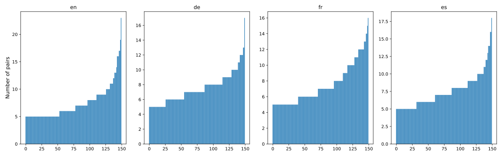
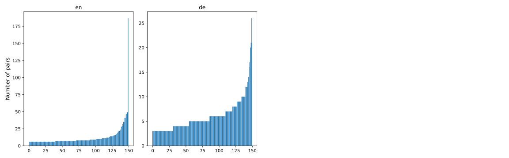
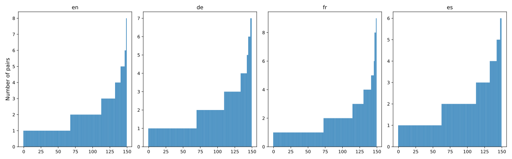
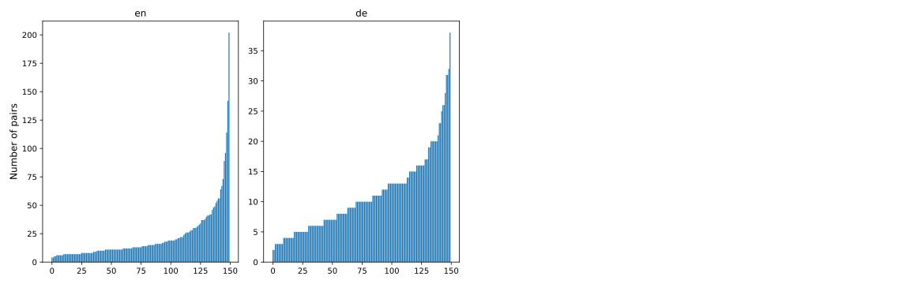
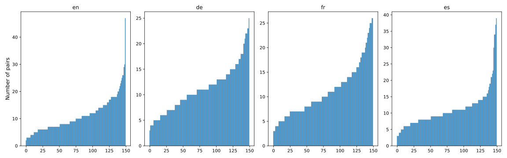

We have conducted a set of experiments around the use of Transformer-based language models for cross-lingual
product matching
at large scale. We framed this task in two distinct ways: either as a multi-class
or a pair-wise classification problem. As basis for our research, we have constructed multilingual datasets for
both setups
that include product offers from various websites. Our multi-class corpus consists of a training set with
over 15,000 offers in English and German for a total of 150 products, and a manually verified test set with a
total of over
6,700 offers in English, German, Spanish, and French for those products. Our pair-wise corpus features
four different training sizes: Small (over 5,000 offer pairs), Medium (over 10,000 pairs), Large (over 75,000
pairs),
and X-Large (over 150,000 pairs). Our verified pair-wise test set contains over 4,000 offer pairs in English,
German, Spanish,
and French. Our experiments have demonstrated that baseline models already show great performance on the
multi-class problem,
while Transformer-based models leverage their contextual and multilingual sensitivity on the pair-wise
challenges.
Product matching generally aims to identify product offers from different sources that relate to the same
physical good.
Since webshops often describe their products in varying detail, this task has become especially crucial for
large online retailers as well as price comparison portals.
Due to the textual heterogeneity of product descriptions, however, product matching is not an easy challenge and
becomes even more difficult when vendors from multiple countries are involved
with products having to be compared across several languages - also referred to as cross-lingual product
matching.
To this end, well-suited methods of entity matching (EM) are necessary to detect whether different offers
describe the same real-world entity.
Traditionally, EM was mainly based on simple string comparison.
With the growing success of neural network-based models for natural language processing (NLP) in recent years,
sophisticated Transformer-based architectures, such as BERT [2], have now come to be applied
to EM tasks with promising results [4,5,7].
In this line, several scholars have also demonstrated the potential of Transformer-based models for product
matching [3,4].
Yet, there has only been little research in the area of cross-lingual product matching with such
architectures.
In our work, we adress this gap and seek to explore whether learned matching knowledge in such setups can be
transferred between languages. More specifically,
we investigate whether high-resource languages, such as English, can be used to augment performance in scenarios
where either no (zero-shot) or few (few-shot) examples are available in the target language.
Towards that, we also study the effect of cross-lingual pre-training with models like mBERT [2] or XLM-R [6] and
compare them to monolingual Transformer-architectures and simple baseline models.
We approach this task with two distinguished setups: On the one hand, we frame the problem as a
multi-class classification task, where a classifier has to
map any given example offer to a specific physical product. Under the pair-wise approach, on the other
hand, a classifier has to learn
how to distinguish product offers from one another and decide whether both offers of a given pair refer
to the same real-world product.
Although many websites semantically mark-up their content or list poduct identifiers, there is no dataset
available that can serve as a sufficient basis for such multi-lingual experiments.
Therefore, we have created several datasets for research on cross-lingual product matching at large scale.
Our sets cover both the muli-class as well as the pair-wise setup and include offers in English (EN), German
(DE), Spanish (ES), and French (FR) for products in the toy and phone domain.
For the pair-wise setup, we offer a total of four different dataset sizes which allows to evaluate the effect of
the training size on the classifier performance.
We have conducted a range of experiments to demonstrate the suitability of our datasets for these tasks.
While our baseline models already show great performance on the multi-class problem, the Transformer-based
models leverage their contextual
and multilingual sensitivity on the pair-wise challenges, achieving an increase in F1-score compared to
classical methods.
Note: The authors acknowledge support by the state of Baden-Württemberg through bwHPC.
2 Product Data Collection & Profiling
Our datasets consist of product offers belonging to two categories. To be able to map different scenarios, we
chose phone and toy to be the main groups of products. This decision is built on the assumption that titles
and descriptions of phones represent the item in a rather structured way. Often, they include a specific model
name, capacity and further technical specifications. Lego and Playmobil items, on the other hand, tend to be
described in a more visual and unstructured way without having lots of technical characteristics. One
fundamental aspect concerning the goal of this project is multilingualism. Four languages were chosen by us to
cover this part: English representing the language with most of the data available on the web and German to be
used for a few-shot scenario. For zero-shot, we selected French and Spanish which are probably among the
languages the least available on the web.
The final datasets include 150 products in each category. For phone, there are a handful major players in the
western market whose product items can be found in most of the online shops and marketplaces. Phone models are
usually released in a variety of different characteristics (color, capacity,...). Each specification is counted
as a single product. Therefore, we determined a list of head products in this category to initially look for.
For toys, we made the decision to focus on the two already mentioned subcategories and crawl the whole range of
products within. In this manner, we created a list of head shops which needed to fulfil the criteria of offering
at least a major part of the head products and, if possible, providing an interface in all of the four
languages. One obstacle were machine-translated websites which, at least regarding the project purpose, are of
lower value and interest. The intention was to avoid these and rather put more effort in looking for smaller web
shops with maintained offer catalogues of high quality. Nevertheless, the main pillar of our data comes from
large web shops around the world. Included are auction platforms and marketplaces but also conventional shops
selling new products only. Offers coming from the former kind of platforms had to be selected more carefully
as private sellers often do not know the exact model of their product, choose the wrong capacity or do sell
accessories only. To avoid such cases we targeted larger businesses for these platforms which seemed to be less
error-proned.
With this knowledge, we crawled the selected websites and products for scientific purposes. The final offer
corpus consists of 171,890 offers, 53,221 concerning phones (32.55% Apple, 28.93% Samsung, 10.10% Huawei and
28.42% others) and 118,669 toys (58.45% Lego, 22.25% Playmobil and 19.3% others). The data comes from 113
Websites (66 Phone and 47 Toy).
3 Clustering & Train-Test-Split
The preprocessing and filtering process of our crawled product offers involved several cleaning steps,
clustering
by product identifiers, and multiple train-test-splits. We want to emphasize that the test sets were manually
checked for correctness to filter out typical noise contained in web data.
3.1 Clustering Product Offers
Our clustering was realized with help of explicitly crawled
EAN (alternatively
GTIN, if EAN not available) and
MPN numbers that work as product identifiers. We
performed
postprocessing steps to unify the crawled identifiers such that they match across
different languages and websites. Many Lego and Playmobil toy offers, for example, allowed to extract MPN
numbers from offer
titles using simple regular expressions. The offers from category phone required more data manipulation,
as different identifiers for the same products are being used in various countries. To solve this problem, we
leveraged lookup-tables such as The iPhone Wiki for
unification of MPN numbers. Each resulting product cluster consists of multilingual offers for the same product
and serves as basis for our multi-class and pair-wise data selection.
3.2 Multi-class Data Selection
The offers for our multi-class datasets were selected from the clustered data following certain rules:
150 main clusters with minimum thresholds for each language: 15 EN, 10 DE, 5 ES, 5 FR.
For each main cluster, there are at least three similar clusters within the 150 selected (e.g. iPhone XS
64GB black vs.
iPhone XR 64GB black).
Additional offers from the 150 main clusters were selected to mimic head-tail-distributions within all
languages.
One large 'other'-cluster with ID 900000 was added which contains similar offers to the 150 main clusters
for all languages (note that it only contains examples from clusters that have at least one offer in all
four languages).
While the French and Spanish data only serves for the multi-class test sets, we needed to randomly split the English
and German data into train and test parts. Afterwards, we manually verified the test data across all
languages. Specifically, we compared all offers of a product cluster and removed or replaced incorrectly classified
ones.
We have decided to consider offers that contain additional accessories to the main product as correctly classified.
This resulted in a dropout rate of 4.7% for phone and 2.4% for toy.
3.3 Pair-wise Data Selection
We built the pair-wise data solely from the available multi-class sets within the single train and test parts.
Thus, we did not have to perform a second verification process. Potential candidate pairs were created by
joining
offers within given clusters (matches) and by combining them with offers from similar clusters as well as close
offers
from the 'other'-class (non-matches). Out of these candidates, we selected pairs such that each cluster
is represented with a minimum amount of data in both the train and test sets. The test sets contain 25% matches
and 75% non-matches while the training distribution is 50% matches and 50% non-matches. Half of each
section was chosen randomly, while the other half contains only hard pairs (measured by cosine similarity).
3.4 Schema of the Datasets
The following schema describes the product offers in our datasets. Please note that all columns appart from
'label' and 'hardness' appear twice in the pair-wise datasets (syntax 'xxx_1' and 'xxx_2'). The attribute
'hardness' is related to the above mentioned fractions of random and hard pairs and thus only contained in the
pair-wise sets.
cluster_id: The integer ID of the cluster to which an offer belongs (only available in
pair-wise sets).
offer_id: Unique integer identifier of an offer.
category: Either 'toy' or 'phone'.
subcategory: Product brand within the given category.
lang: Language of the product offer.
title: The product title.
description: The product description.
ean: European Article or Global Trade Item Number of the product (NaN if not available).
mpn: Manufacturer Product Number of the product (NaN if not available).
label: Either the cluster_id for multi-class or binary matching label for pair-wise sets.
hardness: Either 'hard' or 'random' pair (only available in pair-wise sets).
4 Final Datasets & Statistics
The following section is dedicated to providing some insights into the characteristics of our final datasets.
To start off, Table 1 and 2 offer a series of descriptive statistics on the multi-class and pair-wise data,
respectively.
Table 1: Dataset Statistics Multi-class
Category
Dataset
Lang
Size
# Products
# Products incl. 'Other'-Class
Average Cluster Size
Toy
Training
EN
10,630
150
685
46.87
DE
5,315
150
506
23.43
Test
EN
1,694
150
423
7.44
DE
1,716
150
387
7.48
ES
1,728
150
438
7.52
FR
1,642
150
442
6.89
Phone
Training
EN
10,177
150
725
44.85
DE
5,163
150
421
22.42
Test
EN
1,706
150
421
7.4
DE
1,696
150
361
7.42
ES
1,692
150
371
7.49
FR
1,698
150
383
7.39
Table 2: Dataset Statistics Pair-wise
Category
Dataset
Lang
Size
# Products Matches
# Products Non-Matches
# Positive Pairs
# Negative Pairs
Toy
Training Small
EN
3,600
150
251
1,800
1,800
DE
1,800
150
214
900
900
Training Medium
EN
7,200
150
276
3,600
3,600
DE
3,600
150
241
1,800
1,800
Training Large
EN
50,400
150
381
25,200
25,200
DE
25,200
150
322
12,600
12,600
Training X-Large
EN
100,800
150
420
50,400
50,400
DE
50,400
150
352
25,200
25,200
Test
EN
1,200
150
216
300
900
DE
1,200
150
220
300
900
ES
1,200
150
221
300
900
FR
1,200
150
219
300
900
Phone
Training Small
EN
3,600
150
231
1,800
1,800
DE
1,800
150
229
900
900
Training Medium
EN
7,200
150
260
3,600
3,600
DE
3,600
150
256
1,800
1,800
Training Large
EN
50,400
150
356
25,200
25,200
DE
25,200
150
331
12,600
12,600
Training X-Large
EN
100,800
150
390
50,400
50,400
DE
50,400
150
364
25,200
25,200
Test
EN
1,200
150
211
300
900
DE
1,200
150
226
300
900
ES
1,200
150
225
300
900
FR
1,200
150
227
300
900
The following plots present the distribution of the cluster sizes for both the multi-class and the pair-wise
setting. For both scenarios, we present the 150 main products (i.e., for the multi-class
task, those are the products that are not in the 'other'-class and, for the pair-wise task, those that have
matches).
The x-axis shows the clusters sorted by their cluster size and the y-axis shows the number of
offers for multi-class task and the number of pairs for pair-wise task. We restrict the plots to the category phone
as the
category toy behaves similarly. Additionally, for the pair-wise data, we only show the plots for the smallest
dataset
size.
Figure 1: Number of offers per cluster for the different languages in the multi-class train set of
category
phone
Figure 2: Number of offers per cluster for the different languages in the multi-class test set of
category
phone

Figure 3: Number of matches per cluster for the different languages in the small pair-wise train set of
category phone

Figure 4: Number of matches per cluster for the different languages in the pair-wise test set of
category phone

Figure 5: Number of non-matches per cluster for the different languages in the small pair-wise train
set of category phone

Figure 6: Number of non-matches per cluster for the different languages in the pair-wise test set of
category phone

We conducted a variety of experiments for the task of cross-lingual product matching. Thereby, we framed the
problem in two distinctive ways:
In the multi-class setup, we treated the problem as a multi-class classification task, where the goal is to
map any given example to either one
of our 150 product clusters or the category 'other'. Thus, the label assigned to an example by the classifier
corresponds to the existing cluster IDs, or the ID '900000',
if classified as 'other' respectively. Under the pair-wise setup, in contrast, we framed the problem as a
binary pair-wise matching task.
Here, the classifier is trained to determine whether a given pair of product offers belongs to the same product
based on examples of matching and non-matching pairs.
Again, we included examples of the 'other'-class in the constructed pairs. The label assigned to each pair by the
classifier indicates whether it is a match (1) or not (0).
5.1 Baseline Experiments
We constructed several baselines for both the multi-class and pair-wise approaches.
For one, we employed our baseline models in two monolingual setups (English-to-English and German-to-German).
Second, we studied the zero-shot performance by evaluating our English-trained models on the German, Spanish, and
French test data.
Furthermore, we aimed at providing a competitive benchmark for our multi-lingual setup. To this end, we first
translated the English multi-class training
data into the respective evaluation language and then trained the baseline classifiers on the translated data.
In addition, we exploited the available German training data to evaluate the effect of increased training data by
training our classifiers on a joint set of both the German training data and the English training data translated to
German.
In the pair-wise setup, we made use of the translated multi-class data in similar constellations.
Thus, there are six different training setups:
Baseline Setups:
Training: EN; Evaluation: EN, DE, ES, FR
Training: DE; Evaluation: DE
Training: EN (translated to DE); Evaluation: DE
Training: EN (translated to ES); Evaluation: ES
Training: EN (translated to FR); Evaluation: FR
Training: EN (translated to DE) + DE; Evaluation: DE
Classifiers: For all multi-class and pair-wise experiments, we employed a linear support vector machine,
a random forest ensemble, and a logistic regression model as base classifiers.
Moreover, we fine-tuned the hyperparameters with cross-validation and evaluated the final predictions on our manually
verified multilingual test sets.
Features: We constructed different numerical features from either the title or a concatenation of
title and description.
Thereby, we preprocessed the textual data by removing all MPN and EAN identifiers from the content using custom
built regular expressions.
The removal of stopwords has demonstrated a negative impact on our results, which is why we did not remove them
in the final setup.
The employed numerical features differ between the multi-class and pair-wise experiments. For the multi-class
setup, we used
binary count embeddings, or a tf-idf vectorization from
full words only.
Under the pair-wise approach, we exploited the concept of word
co-occurence
using the product of the binary
bag-of-words representations of both pair members
or relied on automatically generated numerical features using the Magellan framework.
5.2 Transformer-based Experiments
We also explored the use of Transformer-based models in the mono- and multilingual setups.
First, we again evaluated two monolingual settings (English-to-English and German-to-German).
Second, we deployed models in zero-shot setups, fine-tuning on English
training data and evaluating the performance in the target languages German, Spanish, and French.
Moreover, we now also analyzed the effect of multilingual fine-tuning in few-shot setups, where
we fine-tune the models on both our English and German training data and evaluate their performance in all four
target
languages. Thus, there were three different experimental setups:
Transformer Setups:
Training: EN; Evaluation: EN, DE, ES, FR
Training: DE; Evaluation: DE
Training: EN + DE; Evaluation: EN, DE, ES, FR
All of our experiments were conducted using HuggingFace's Trainer wrapper class for
PyTorch.
For every experimental run, the learning rate was optimized in the range between 5e-6 and 1e-4 using a validation set
and early stopping.
That is to say, if a given model did not improve for three consecutive epochs during hyperparameter tuning, the specific run was aborted.
During training, we fine-tuned the models for
25 epochs. We utilized a fixed batch size of 16 and a weight decay of 0.01 for the learning rate. All other
hyperparameters were set to their default values. The
scores reported are averages over three runs that were individually trained using the same
hyperparameter setup.
Models: We utilized three different pre-trained Transformer-based models from the
HuggingFace library. As a monolingual option, we deployed the BERT model ('bert-base-uncased') trained in
English.
Beyond that, we also made use of mBERT ('bert-base-multilingual-uncased') as well as XLM-RoBERTa
('xlm-roberta-base') to examine the performance increase afforded by models trained in multiple languages.
Features: Similar to the baselines, we evaluated the product title and the concatenation of the product
title and the description. Moreover, MPN and EAN identifiers were removed from the textual
data as described above.
Since we did not restrict the length of the individual attributes, the sequences are limited only by the maximum
input length of 512 tokens of the models used.
6 Experimental Results
Table 3 shows the results of the experiments for the multi-class scenario, on the one hand, and the small and
medium datasets for the pair-wise scenario, on the other hand. Using the
size selector at the top of the table, the different scenarios can be chosen. The individual tables
contain the best baseline and transformer scores for both categories in the different train and test settings.
While bold text marks the best run in a given setting, subscript 't' flag runs that only used the feature
title. The necessary code to retrace our experimental runs can be found in our GitHub repository.
Table 3: Experimental results
Category
Setting
Baseline
Transformer
Train Lang
Test Lang
Classifier
Embedding
Score
BERT
mBERT
XLM-R
Toy
DE
DE
SVM
TF-IDF
0.9677
0.9668t
0.9745
0.9626
EN
DE
SVM
TF-IDF
0.7084
0.4713
0.6176
0.5955t
EN
EN
Logistic Regression
TF-IDF
0.9683
0.9836
0.9754
0.9743
EN
ES
Logistic Regression
TF-IDF
0.6735t
0.3722
0.5619
0.4812
EN
FR
Logistic Regression
TF-IDF
0.7047
0.4826
0.5975
0.5658t
EN+DE
DE
SVM
TF-IDF
0.9757
0.9789
0.9828
0.9723
EN+DE
EN
-
-
-
0.9802
0.9823
0.977
EN+DE
ES
-
-
-
0.5034
0.6602t
0.5792
EN+DE
FR
-
-
-
0.563
0.6695
0.6384t
Phone
DE
DE
Logistic Regression
TF-IDF
0.7891t
0.9422
0.9552
0.9131t
EN
DE
Logistic Regression
Binary BOW
0.6973t
0.7019
0.756
0.7348
EN
EN
Logistic Regression
Binary BOW
0.8341t
0.9544
0.9445
0.9324
EN
ES
SVM
Binary BOW
0.7016t
0.5714t
0.6623
0.555
EN
FR
SVM
Binary BOW
0.6232t
0.5263t
0.6025
0.475
EN+DE
DE
Logistic Regression
Binary BOW
0.8394t
0.9486
0.958
0.9294t
EN+DE
EN
-
-
-
0.9529
0.9621
0.9257t
EN+DE
ES
-
-
-
0.8571t
0.886
0.7589t
EN+DE
FR
-
-
-
0.8852
0.8205
0.7143
Table 3: Experimental results
Category
Setting
Baseline
Transformer
Train Lang
Test Lang
Classifier
Embedding
Score
BERT
mBERT
XLM-R
Toy
DE
DE
SVM
Co-Occurence
0.8298
0.8984
0.948
0.9026
EN
DE
Random Forest
Co-Occurence
0.6746t
0.6777t
0.8891
0.882
EN
EN
Logistic Regression
Co-Occurence
0.8263
0.9167
0.9223
0.9284
EN
ES
Logistic Regression
Co-Occurence
0.625t
0.6767t
0.8043
0.7725
EN
FR
SVM
Co-Occurence
0.6732
0.7416
0.8002
0.7748
EN+DE
DE
Logistic Regression
Co-Occurence
0.8146
0.9236
0.9397
0.9401
EN+DE
EN
-
-
-
0.9258
0.9239
0.9275
EN+DE
ES
-
-
-
0.7528
0.8467
0.8388
EN+DE
FR
-
-
-
0.75
0.8298
0.8299
Phone
DE
DE
SVM
Co-Occurence
0.7304
0.7507t
0.8803
0.8498t
EN
DE
SVM
Magellan
0.6681
0.7168t
0.8222
0.7607t
EN
EN
SVM
Co-Occurence
0.7571
0.7806t
0.9117
0.8565t
EN
ES
Logistic Regression
Magellan
0.614
0.7292t
0.7893
0.7556t
EN
FR
SVM
Magellan
0.5952t
0.7218t
0.7352
0.745t
EN+DE
DE
SVM
Co-Occurence
0.7297
0.8202t
0.8874
0.8713
EN+DE
EN
-
-
-
0.8462t
0.9102
0.8713
EN+DE
ES
-
-
-
0.7753t
0.8091
0.7914
EN+DE
FR
-
-
-
0.7795t
0.7847t
0.7951t
Table 3: Experimental results
Category
Setting
Baseline
Transformer
Train Lang
Test Lang
Classifier
Embedding
Score
BERT
mBERT
XLM-R
Toy
DE
DE
SVM
Co-Occurence
0.8437
0.9318
0.9502
0.9533
EN
DE
SVM
Co-Occurence
0.7163t
0.7653t
0.9002
0.907
EN
EN
SVM
Co-Occurence
0.8403t
0.9515
0.9323
0.949
EN
ES
SVM
Magellan
0.6581t
0.7418t
0.8214
0.8068
EN
FR
Logistic Regression
Co-Occurence
0.7005
0.76
0.8167
0.8142
EN+DE
DE
Logistic Regression
Co-Occurence
0.8458
0.9465
0.9638
0.9657
EN+DE
EN
-
-
-
0.9398
0.9477
0.9543
EN+DE
ES
-
-
-
0.7799
0.8649
0.8444
EN+DE
FR
-
-
-
0.7736
0.8662
0.8558
Phone
DE
DE
SVM
Co-Occurence
0.7581
0.8588t
0.9363
0.9114
EN
DE
Logistic Regression
Co-Occurence
0.7096
0.7813t
0.8503
0.8258
EN
EN
SVM
Co-Occurence
0.7824
0.8852
0.9348
0.9257
EN
ES
Logistic Regression
Magellan
0.6184
0.7627t
0.8113
0.7717
EN
FR
SVM
Magellan
0.5951t
0.7572t
0.7876
0.768
EN+DE
DE
SVM
Co-Occurence
0.7592
0.8818t
0.9446
0.9287
EN+DE
EN
-
-
-
0.9035
0.9484
0.9351
EN+DE
ES
-
-
-
0.8063t
0.8846
0.8252
EN+DE
FR
-
-
-
0.801t
0.8563
0.8211
7 Discussion
We conducted a variety of experiments for the task of cross-lingual product matching framed both as a multi-class and
as a pair-wise problem.
For the multi-class problem, we observe high scores for the baselines (EN-EN: 0.97 and DE-DE: 0.97) and the
Transformer-based models (EN-EN: 0.97, DE-DE: 0.97) in the category toy, if training data in the evaluation language
is available. If English data translated to the respective evaluation language is used as training data, the scores
drop to 0.67 - 0.71 for the baselines. Similarly, the scores of the Transformer-based models drop to 0.56 -
0.62, if the models are trained on English data and zero-shot transfer to the evaluation language is applied. In
these settings, the baselines outperform the Transformer-based models.
In the category phone, the baseline scores for models trained on the evaluation language are lower (EN-EN: 0.83
and DE-DE: 0.79). In this category, the Transformer-based models outperform the baselines by a large margin (EN-EN:
0.95 and DE-DE: 0.96). The scores for the baselines (0.62 - 0.70) and the Transformer-based models (0.60 - 0.76)
drop as soon as the models are trained on translated English data (baselines) or zero-shot transfer is applied
(Transformer-based). However, the Transformer-based models outperform the baselines on the English-to-German setup
by 6 percentage points and are closer on the English-to-Spanish (4 percentage points difference) and English-to-French
(2 percentage points difference) setup compared to the category toy. The reasons for the significant drop in
performance in the zero-shot setup might stem, among other things, from the 'other'-class.
In the multi-class few-shot setup (trained on English and German), the evaluation languages Spanish and French show a
substantial gain compared to the zero-shot setup, although the model did not see any Spanish or French training
data. In the category toy, the models improve by 10 percentage points in Spanish and by 7 percentage points in
French. In the category phone, these gains are even larger. The Transformer-based models improve by 23 percentage
points in Spanish and by 29 percentage points in French.
In the pair-wise problem, the scores for the baselines trained and evaluated on the same language are lower than the
multi-class scores (EN-EN: 0.84 in toy and 0.78 in phone, DE-DE: 0.84 in toy and 0.76 in phone). In these
settings, the Transformer-based models outperform the baselines significantly (EN-EN: 0.95 in toy and 0.93 in
phone, DE-DE: 0.95 in toy and 0.94 in phone). We observe that the differences in the other evaluation
settings between categories toy and phone are less noticeable than in the multi-class problem.
We again notice a drop in performance for the baselines trained on translated English data and for the
Transformer-based models if zero-shot transfer is applied. However, this drop is less severe than in the multi-class
problem. For the baselines the scores drop to 0.66 - 0.72 in the category toy and to 0.60 - 0.71 in the category
phone. For the Transformer-based models the scores drop to 0.82 - 0.91 in the category toy and to 0.69 - 0.85 in
the category phone. Again, the Transformer-based models outperform the baselines by a large margin. Similar to
the multi-class few-shot setting, we observe gains in the evaluation in Spanish (4 percentage points in toy and 7
percentage points in phone) and French (5 percentage points in toy and 7 percentage points in phone).
Concluding on our research question whether learned matching knowledge can be transferred across languages in the
domain of product matching, we note that our results in
the plain zero-shot multi-class setup do not directly confirm our hypothesis as we could only outperform our
baselines in the English-to-German setup in the category phone. However, it is important to further analyse the
impact of the 'other'-class. Future research might experiment with a two-step classification approach to first
filter the instances of the 'other'-class before solving the multi-class problem. This might help to unfold the
potential of the transformers.
In contrast, the results in the zero-shot pair-wise setup show that cross-lingual transfer is very promising in such
a scenario. Moreover, both the pair-wise and multi-class scenarios demonstrated substantial improvements in the
few-shot setup, outperforming even the English-to-English scenario. These findings are strong evidence that
cross-lingual product matching with Transformer-based models is beneficial.
Additionally, these findings raise the question of the minimum number of target language instances needed to achieve a
performance comparable to the Target Language to Target Language (e.g., German-to-German) setup for future research.
Christophides, V. et al.: Entity Resolution in the Web of Data.
In: Synthesis Lectures on the Semantic Web: Theory and Technology, 5(3):1–122, (2015).
Vaswani, A. et al.: Attention Is All You Need.
In: NIPS'17: Proceedings of the 31st International Conference on Neural Information Processing Systems, 6000-6010 (2017).